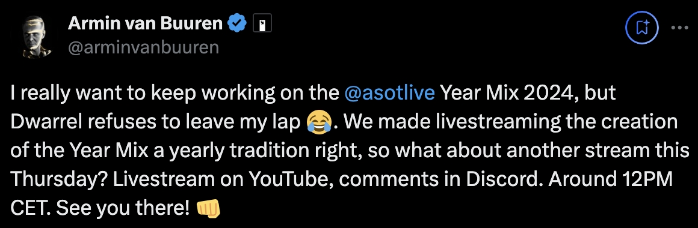
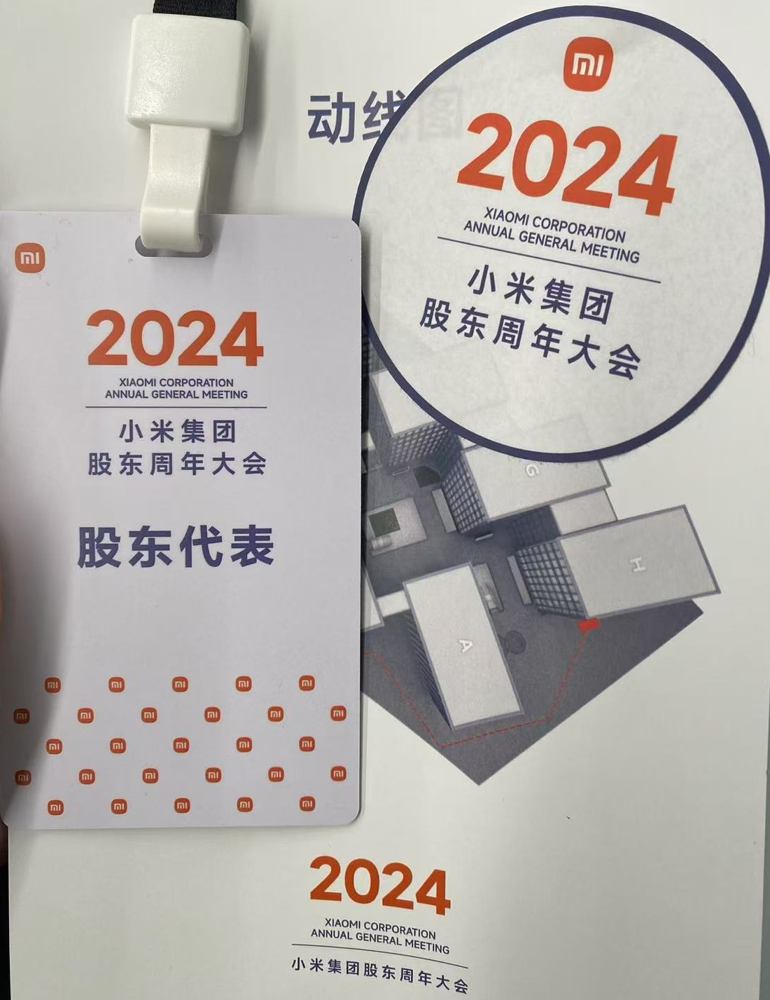
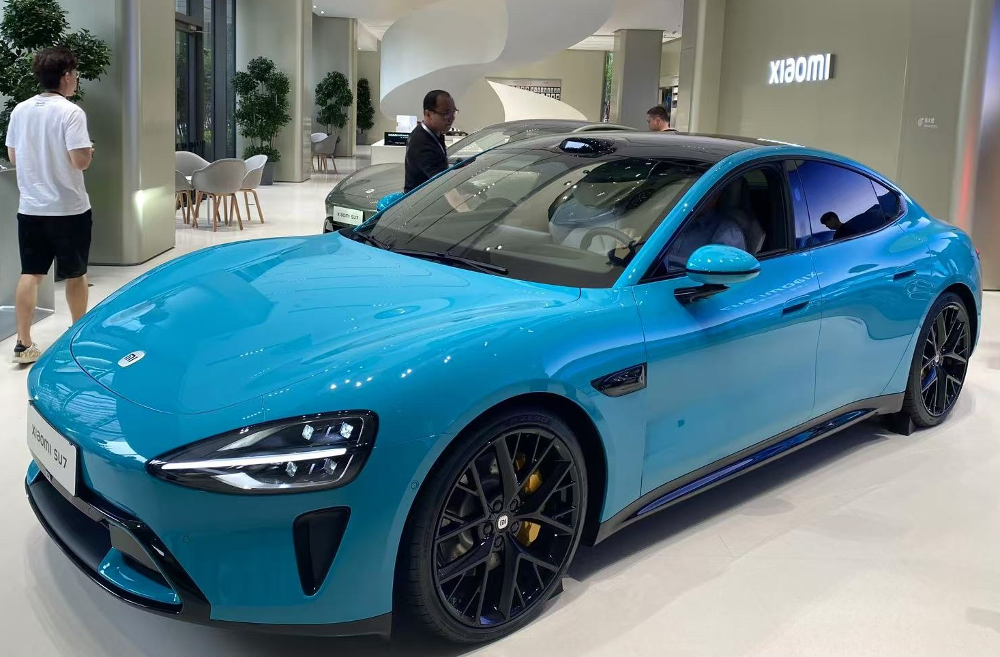
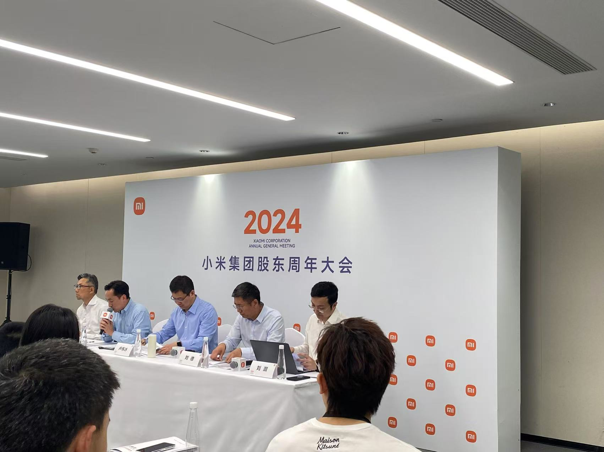
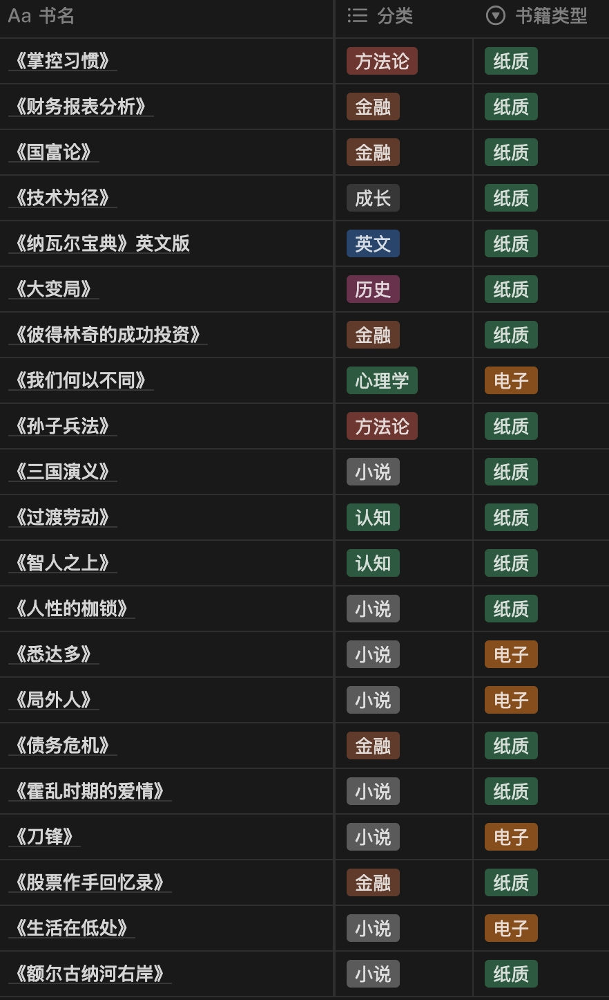
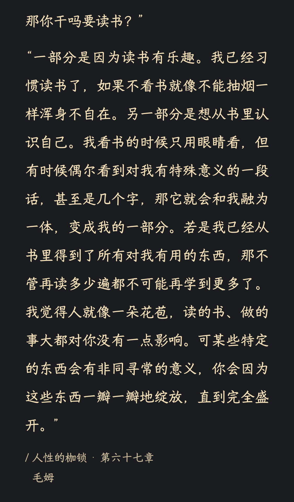
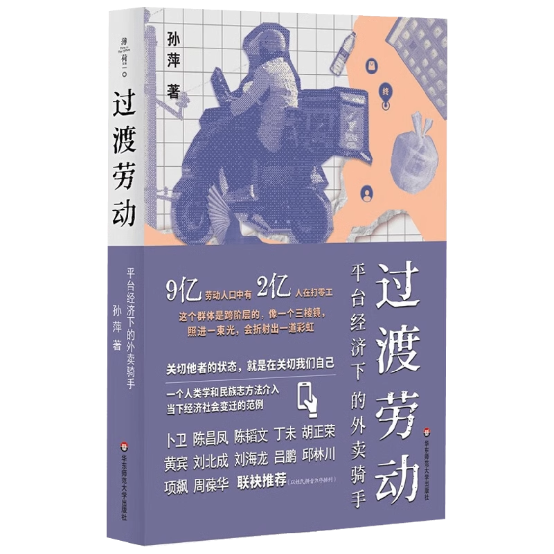
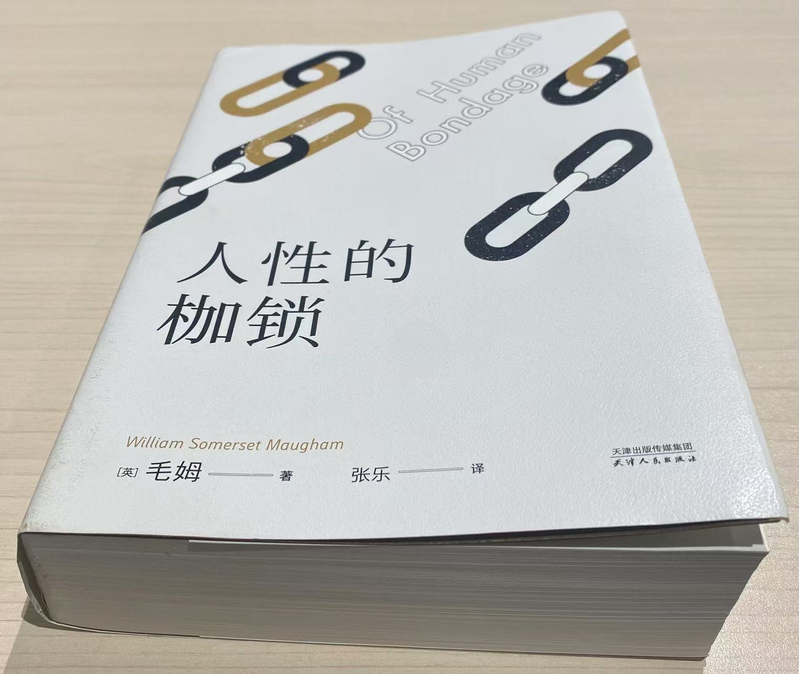
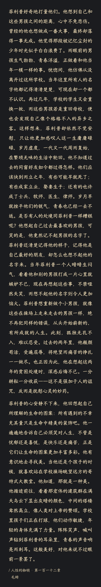
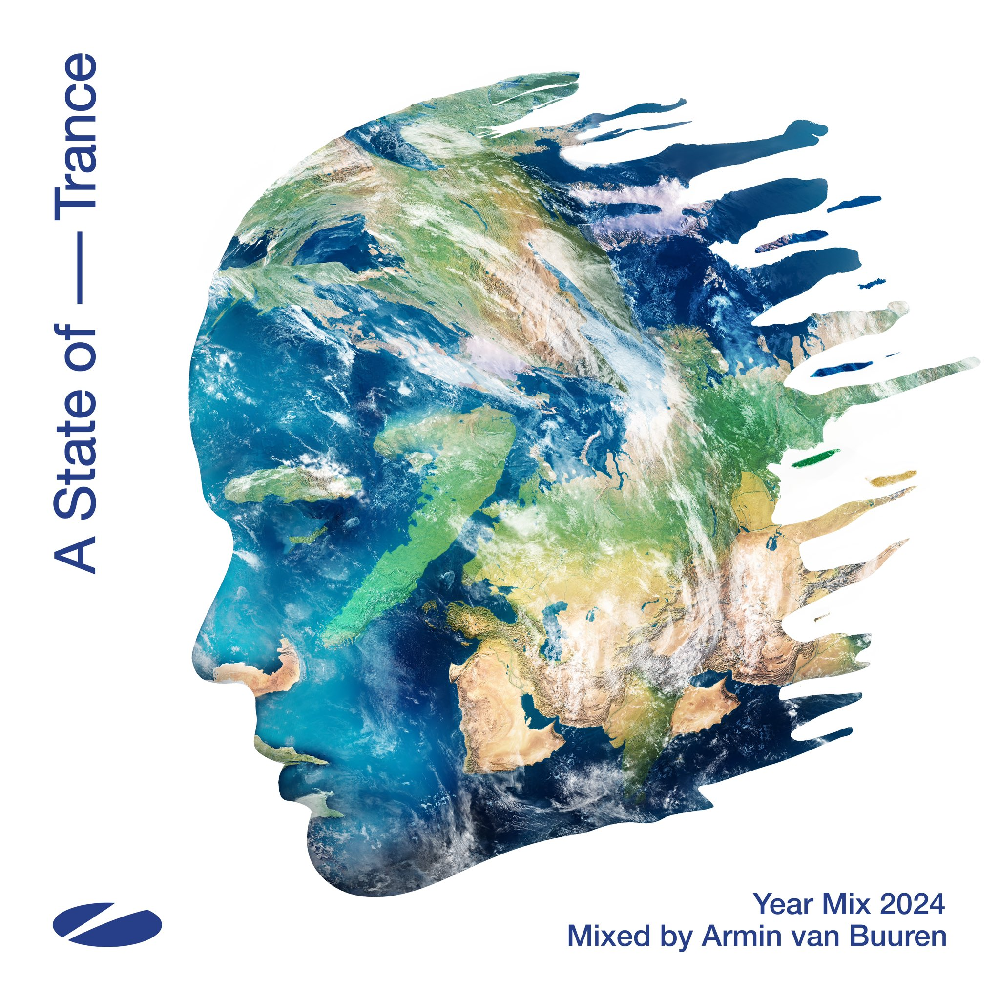

2024年终总结
Contents

2024 年 11 月 5 日，周二，明叔发推说他将在周四直播《A State of Trance Year Mix 2024》的制作过程，并回答大家的问题。自 2004 年起，明叔每年年底都会制作并发布这张时长两个小时左右的混音专辑，收录当年最优秀的 Trance 音乐作品。在我看来，这张年度混音专辑的发布标志着这一年 Trance 音乐的总结，同时也意味着这一年即将结束。

从 2016 年开始，每年年底我都会对这一年的经历与成长进行总结。随着年龄的增长，越来越感觉时间流逝得越来越快，因此总结每一年显得愈发重要。这样的总结不仅是一次回顾，也是一种提醒和反思，帮助我回顾这一年哪些方面做的不错，哪些方面需要改进。
从去年起，我的年终总结也与明叔的 Year Mix 同步。因此，当明叔开始直播制作 Year Mix 时，也意味着我该开始写自己的年终总结了。（📝 2024.11.10）
按照惯例，我会将总结分为技术、金融投资、写作、英语和习惯养成五个部分。然而，今年我将习惯养成拆分为阅读、健身和效率管理三个部分。最后，我会分享我自己眼中今年值得铭记的几个时刻，同时对 2025 年做出新的期许。OK, Let’s go down the rabbit hole!
金融投资
这部分完成了规划的四分之三，今年主要做了下面这些事情：
- 学完《财务报表分析》：去年阅读《证券分析》时，发现自己对财务报表中的基础概念了解不够，所以读这本书时感到很吃力。因此，从去年年末开始学习《财务报表分析》以补充基础知识，并在今年将整本书学完。
- 总结完成公司分析方法，尝试建立投资框架：在读完《财务报表分析》后，结合之前阅读的投资相关书籍，我总结并发表了《公司分析》系列文章，尝试初步建立自己的投资框架。
- 重读部分投资书籍，总结其中重要方法：今年在读《彼得·林奇的成功投资》和《股市真规则》时，发现其中的一些观念和原则非常相似，所以我尝试将之前读到的优秀投资书籍中的重要原则、对各类资产的看法以及建议进行汇总，方便后续查看。
- 再次尝试分析公司：在总结完公司分析方法后，我尝试使用所学的方法进行公司分析。过程确实非常困难，总感觉理论和实践脱节。因此，今年只能说是开了个头，明年仍需加强实践。
除年初规划之外，今年还有一些事情值得记录。
参加小米股东大会
今年上半年，我再次收到小米股东大会的通知。记得上一次去还是在2019年，后来因疫情原因没有再线下举行，因此看到通知后我决定去看看。需要说明的是，只要持有小米股票，就可以参加股东大会，对持股数量没有要求。
到达后，首先是签到，然后跟随工作人员进入指定区域，等待大会开始。值得一提的是，参会者都会收到公司送的小礼品，大会结束后可以参观小米的相关产品。这次我第一次现场看到小米SU7，确实非常漂亮。


股东大会整体规模不大，参会人数也没有我想象的多。令我意外的是，大家最感兴趣的并非小米的财报、运营等数据，而是刚刚发布不久的小米SU7，讨论的重点集中在其后续规划上。

对于股东的提问，管理层会如实回答。但我感觉他们对一些提问的回答并不充分。例如，有股东提到对小米股价长期滞涨的不满，建议公司像其他公司那样分红。虽然管理层对此做了回应，但更多是一些套话，并未给出具体的解决方案，显得有些敷衍。这是让我印象最深的问题，但最终也不了了。也就是这一次，我对小米管理层的映像变得不好，再加上这些年来的走势，所以决定不再持有小米。
时间来到 11.18，小米发布了 Q3 财务数据，第三季度，小米总收入达到925.1亿元，同比增长30.5%，这一数字超越了历史同期水平。 雷总对此表示，这是小米史上最强的业绩表现。而股价距离历史最高点仅有几步了。这一次我彻底判断错了。
公司的价值基于基本面，在未深入研究基本面的情况下，盲目根据自己的主观想法进行买入卖出很不可取的。投资者应认真分析公司的财务状况、市场前景和竞争优势等基本面因素，才能做出更加理性和明智的投资决策。
对于小米这家公司，确实难以理解。从手机到汽车，再到洗衣机、空调等各类家电，几乎无所不做，在市场上堪称独一无二的存在。也许明年，我应该更多地思考一下这家公司，尝试去理解它到底是什么。
投资转向熟悉的领域
最好是从别人的悲惨经历中学到深刻教训，而不是自己的。——查理·芒格
随着对投资的理解越来越多，越来越觉得大佬们的一些忠告是对的，那些都是经验教训，有些甚至是犯错后得出来的。
今年尝试将自己读过的一些不错的书中的投资的原则、对各类资产的看法以及建议汇总出来，其中几乎每本书都提到的一个观点是：从自己熟悉的领域开始。彼得·林奇在《彼得·林奇的成功投资》中更是提到：
一个在某一行业拥有优势的人总是比没有优势的人在这一行业进行股票投资的胜算更大——毕竟在行业上没有优势的人是最后一个知道这一行业发生重大变化的人。
所以从今年开始将自己的关注点转移到熟悉的领域来，缩小关注范围，专注于自己了解的领域。
对投资的一些新想法
随着这些年对投资的理解不断加深，我的想法也在逐渐改变。今年我的一些想法：
- 投资非常难，和创业一样难；
- 从自己熟悉的领域开始；
- 保持谦虚，敬畏市场；
- 买入并持有优质资产。
这些年来，我越来越深刻地感受到投资的难度。它非常难，比创业有过之而无不及。如果不是特别感兴趣，我并不建议去做主动投资（直接买卖股票），因为市场中跳动的数字会无限放大人性中的贪婪与恐惧，很容易使人做出非理性的决策，追涨杀跌，最终一败涂地。
今年 9 月底的一系列政策让 A 股在短短几天内出现大幅上涨，在 9 月 26 日至 30 日期间，A 股出现罕见大涨，上证指数累计涨幅超过 15%，其中，9 月 30 日收盘，上证指数报 3336 点，单日涨幅 8.06%。在此期间，我看到大量的新手开始入场，开户数量创历史新高，网上甚至出现大量的博主开始教大家买什么股票，一场狂欢拉开帷幕。然而经过几十天的狂欢，整体市场出现明显的回撤，约 1700 余只股票已跌回 9 月水平，占整个A股近 32%，104 只股票从 9 月24 日以来的最高点回撤超过 30%。所以，不要相信那些教你买卖股票的人，记住芒格的这句话：
人们试图教你炒股，鼓励你积极主动地交易股票。我认为，这大致上相当于试图诱使年轻人开始吸食海洛因。——查理·芒格
技术
今年在技术方面的完成的一般。虽然年初规划了自主学习一些内容，尤其是系统设计相关知识，但渐渐发现，如果学到的内容无法在实践中应用，很容易忘记。因此，今年技术上的进步及变化主要来源于工作中的实际应用。具体来看，主要有以下几个方面：
- 对 Electron、Puppeteer、Node.js 等有了更深入的理解：因为工作需要，我在这些技术上进行了实践，并对其有了更深入的理解，期间还写了几篇相关的文章。
- 对服务稳定性有一定的实践：随着用户增长，稳定性变得越来越重要，所以在这方面进行了优化实践。
- 全面拥抱 AI：随着 AI 技术的不断成熟，我在工作和学习中逐步引入并应用 AI，提高了工作效率和解决问题的能力。AI 已成为提升技术水平的重要工具。
AI 应用无处不在
今年在技术上值重点说的就是 AI 的应用。随着 AI 的成熟，我在各个方面应用 AI 的频率也越来越高，特别是在技术领域。以前遇到疑问时，我通常会使用搜索引擎，而如今更多地是向 AI 求助。当然，纯 AI 的回答不一定全对，需要自己仔细甄别。
由于 AI 回答的准确性存在不确定性，AI 结合搜索变得尤为重要。AI 会将搜索到的结果整理总结出重点内容来回答，这就是 Perplexity 的核心所在。所以，今年另一个重要的变化是从之前常用的搜索引擎转向 AI 搜索。今年我明显感觉到，使用纯搜索引擎的次数减少了。
今年还有一个重要的变化是 AI 应用的增多，尤其是在编辑器领域。之前，GitHub 发布过基于 GPT 的 GitHub Copilot，它是一个 VSCode 插件。但是随着 AI 技术的成熟，一些内嵌 AI 的编辑器开始出现，今年最火的编辑器非 Cursor 莫属。它与 Copilot 相比如下：
| 特性 | Cursor | GitHub Copilot |
|---|---|---|
| 基础模型 | GPT-4、Claude等多模型 | 基于OpenAI Codex |
| 编辑器形态 | 独立IDE | 作为IDE插件 |
| 代码生成 | 支持多文件同时编辑 | 主要聚焦单文件代码补全 |
| 知识整合 | 可集成本地笔记作为知识库 | 依赖GitHub代码库训练 |
| 使用场景 | 适合项目级开发和重构 | 更适合单文件代码编写 |
| 代码补全 | 基于上下文的智能补全 | 实时行级代码建议 |
| 自然语言支持 | 强大的自然语言理解能力 | 主要依赖代码上下文 |
这些特点使得 Cursor 在今年迅速走红，成为开发者们的新宠，大大提升了编程效率和工作体验。而在 Cursor 走红后，越来越多的团队开始搞 AI 编辑器，这也体现了 AI 技术在编程领域的巨大潜力和广阔前景。
阅读
今年全年阅读完成 21 本书，其中《国富论》几乎花费了半年的时间读完。

今年，在阅读方面有两个重要的变化：
- 开始接触文学作品并渐渐理解了文学的意义：今年我开始阅读小说，读完的第一本是《三国演义》，第二本是毛姆的《人性的枷锁》，这也是我第一次接触西方文学作品。
- 开始享受阅读带来的放松感：今年我发现阅读能带来一种放松感，给人内心以平静，这也许正是文字的力量之一。
接触文学作品
我自己开始阅读小说，也完全是出于好奇心。在此之前，我一直觉得与技术、金融、成长以及方法论等实用书籍相比，文学作品并没有什么实际用途，不会带来显著的实用价值。直到今年下半年，我的想法彻底改变。
今年上半年回家时，我注意到书柜里摆放着的《三国演义》。这套书已经买了很多年，但是因为之前并没有养成阅读的习惯，所以这套书虽然读过几次，但始终没有读完。同时，我对《三国演义》的电视剧也只是看过一些片段，没有完整地看过。于是，我决定读完这本书，弄清《三国演义》的整体故事。在读完《三国演义》后，考虑将其他三本名著也都读一遍。
选择阅读毛姆的《人性的枷锁》完全是因为书名引发了我的好奇心。我一直希望对人性有更深入的理解。今年在微信读书上偶然发现了这本书，尽管当时没有深入阅读，但在中秋假期的火车上，由于闲暇时间较多，我再次打开微信读书，开始阅读这本书。随着阅读的深入，我逐渐被其内容所吸引，发现书中的主人公菲利普似乎就是我们大多数普通人的写照。我开始深深佩服毛姆，能够写出这样深入人心的作品。因此，当我阅读电子书读到差不多一半时，我果断下单购买了纸质书。这里顺便提一下我购买纸质书的标准：如果我认为这本书值得我反复阅读第二遍、第三遍，甚至第 N 遍，为了方便后续深入阅读，我会购买纸质版。
在读完《人性的枷锁》后，陆续读完加缪的《局外人》，黑塞的《悉达多》，马尔克斯《霍乱时期的爱情》等等，不过我个人感觉还是毛姆的书接地气，很容易读，所以后续又将《刀锋》读完。目前在读的文学作品是《额尔古纳河右岸》和《加缪手记》。
感受到阅读的魅力
在此之前，我阅读大多数书籍都是带有明确目的的，例如为了帮助我解决某个问题而学习特定内容。在这种背景下，我能够明显感觉到自己学到了什么，但对于阅读本身带来的感受，并没有很深的体会。直到今年开始阅读文学作品，并以一种无目的的心态进行阅读时，我才发现，阅读能给我带来一种松弛感，使内心感受到平静，得到放松，也许这才阅读真正的力量。
为什么要阅读
关于为什么要阅读，在此之前其实我并没有仔细考虑过，我开始阅读仅仅是因为查理·芒格的这句话：
“In my whole life, I have known no wise people (over a broad subject matter area) who didn’t read all the time – none, zero. You’d be amazed at how much Warren reads – and at how much I read. My children laugh at me. They think I’m a book with a couple of legs sticking out." - Charlie Munger
而且我渐渐的发现不止芒格有这样的观点，很多优秀的人都有这样的观点。
但是今年，我在《人性的枷锁》中，看到毛姆对于“为什么要阅读”的回答，我觉得非常好，所以分享给大家：

推荐的书
在今年读完的书中，我比较推荐的是两本：《过渡劳动》和《人性的枷锁》。
《过渡劳动》

这是一本关于平台经济下外卖骑手群体的书，通过在 19 个城市历时 7 年的田野调查，深入探讨了中国平台经济背景下外卖骑手的劳动形态及其社会意义。
这本书通过对外卖行业的分析，揭示了过渡性如何成为中国外卖劳动中最明显的特征。通过这一视角，不仅让我们看到历史脉络中的中国城镇化和流动人口所面临的旧问题，同时也能探讨技术变革与工作环境变化所引发的新困惑。
在“努力就能成功”的励志格言背后，外卖骑手不得不面对阶层、性别、结构、关系等形成的种种困难和挑战。在此过程中，固有的坚持和残酷的现实让个人变得摇摆不定。过渡劳动也由此产生。加入并不是目的，离开也不是终点。过渡劳动的“过渡性”正在延展成一种永恒的状态。正如卢梭所言，“人生而自由，却无往不在枷锁之中”。——《过渡劳动》
如果想了解外卖骑手这个群体，非常推荐这本书。
《人性的枷锁》

本书是毛姆的一部自传体小说，主要讲述了主人公菲利普从童年到成年的成长历程。菲利普天生跛足，幼年丧父丧母，在伯父家寄养长大。由于身体缺陷，他从小性格敏感自卑，不敢与人交往。在成长过程中，他先是追求艺术却发现自己平庸，转而学习医学；经历了一系列爱情，尤其是与米尔德里德的痛苦爱情后，最终遇到萨莉，找到了平凡而踏实的人生。
这部小说深入探讨了宗教信仰、道德观念、理想与现实等人生枷锁，展现了一个人如何突破各种束缚，最终获得精神自由的过程。书中展现的是每个普通人都可能经历的困惑与挣扎，让读者能在其中找到共鸣。它告诉我们：人生的真谛不在于追求完美，而在于学会接纳平凡的自己，与内心和解。

写作
今年的写作部分完成的不错，值得提的几件事情如下：
- 输出 20+ 篇文章：今年的文章输出量是历年来最多的，大部分是我总结自己学到的东西，还有一部分是我的一些思考。
- 出现阅读量突破 2 万的文章：在发布的文章中，一篇关于使命、愿景和价值观的文章，获得了超过2万的阅读量。我写这篇文章的初衷是发现这些概念对个人也很重要，因此搜集整理了相关资料，重新梳理了三者的含义及关系，没想到发布后挺受欢迎。
- 尝试越来越多的系列文章：去年总结《债务危机》时内容较多，因此拆分成了多篇文章发布。今年总结公司分析、掌控习惯等话题时更是如此，所以今年越来越多的开始写系列文章。
- 写作效率明显提升：得益于 AI 的帮助，我明显感觉写作效率有了大幅提升。之前在写作中遇到的卡点在 AI 的帮助下基本已经消除了。
今年年初计划学习写作方法，但是未能完成。可能是因为有AI的帮助，使得之前在写作中遇到的困难不再是问题，或者是优先级不够高，总之这一计划未能实现。我觉得以后还是需要抽空学习写作方法，毕竟虽然有AI的帮助，但整体的写作框架仍需要自己来构思，否则很难真正提升写作水平。
健身
今年健身计划仍在继续。工作日的每个晚上都会去健身房锻炼一个小时。然而，从外观和数值来看，变化不大，年初设定的目标也未实现。
我个人一直觉得减脂的原理其实很简单：减少摄入，增加消耗，自然就会降低体脂。然而，这个过程需要强大的意志力来支持。今年为了达成目标，尝试了一些新方法。例如在11月份时，坚持每餐只吃少量减脂餐，保持适度的饥饿感。那段时间体脂确实有所下降，但由于未能坚持，最终又回到了原有的状态。此外，今年下半年还尝试将自己的现状和预期状态输入给 AI，希望借助其帮助制定更合理的健身计划。虽然按照计划执行了一段时间，但因为没有严格遵循，所以效果不明显。
关于健身，明年需要重新思考，如何能够更合理的达到自己设定的目标？感觉这一块儿需要读一些和健身，身体健康相关的书籍，借助 AI 再次改进自己的计划。
英语
今年，英语学习进展依旧不理想，全年只学完了两篇致股东信，与原本的计划相差较大。究其原因，大概有以下几点：
- 无法固定时间：阅读和健身能够取得明显进展，原因在于有固定时间进行这些活动。然而，英语学习依赖于早晨的时间，也就是说需要早起。如果做不到早起，那么学习就变得不稳定，常常三天打渔两天晒网。
- 目标不够明确：在制定计划时，没有设定明确且可衡量的目标，这导致整体执行效果难以评估。计划变得流于形式，从而降低了学习积极性。
回顾去年，同样存在这些问题。所以，对于这个问题，需要仔细考虑，争取在明年有更大的突破。
效率管理
效率管理方面，今年依旧采用 OKR + ToDo List + 时间记录的方法，从 年 ➡️ 季度 ➡️ 月 ➡️ 周 ➡️ 日 逐级划分，整体变化不大。然而，今年发现一个问题：如果严格记录每项工作的具体时间与耗时，会让自己整天处于紧绷状态，虽然效率大幅提升，但确实感到非常疲累。于是，今年下半年开始，虽然仍会进行规划，但不再记录时间花销，让自己稍微放松一些。不过，这也带来一个新问题，即效率下降。
所以明年在效率管理上需要思考一个问题：如何管理精力，保持高效状态？
2024难忘时刻
这部分主要记录 2024 年值得记录的时刻，所以图和视频会比较多。
1. 电子音乐之旅
今年全年一共参加五场音乐盛典：
- 三场电音节：VAC 5.5、VAC 6.0、EDC（因台风取消，将在2025年春天回归）；
- 两场巡演：Alan Walker 和 ALIGASH。
上半年
VAC 5.5 圆梦 Anyma 和 Charlotte de Witte
今年五一假期一共举行了三场电音节：VAC 5.5、风暴杭州、Pandaland。


风暴音乐节的 Maddix、Nora En Pure、Amber Broos 和 VAC 音乐节的 Anyma、Charlotte、Alesso，我都很想看。不过，我更期待的是 Anyma 的 VJ 表演和 Charlotte 的 Techno 音乐，于是最终选择去合肥参加 VAC 5.5。
Anyma 是 Matteo Milleri 的个人音乐项目，他通过尖端技术将计算机生成的环境与现实生活融合，创造出独特的数字化艺术表现形式。这种创新的表演方式让观众能够与数字艺术和音乐互动，打造出独特的视听体验。
之前我看过 Anyma 的现场视频，VJ 表演真的非常帅，尤其是今年在 Afterlife 智利现场的开场，Eva 机器人那段真的是太惊艳了，还有之前在网上刷爆的美杜莎表演，这次肯定也会有，所以我非常期待 Anyma 在 VAC 5.5 的表演。
虽然我做过心理准备，但当我真的在现场看到后，还是感到非常震撼。
再有就是 Charlotte de Witte，她是比利时最具影响力的电子音乐DJ和制作人之一，以其独特的“黑暗而简约”的酸性和极简 Techno 风格而闻名。这些年来，她频繁在全球顶级音乐节和俱乐部演出，包括 Tomorrowland 主舞台和 Ultra 音乐节等。
虽然我之前无数次听过她的现场 Set，但当那些熟悉的旋律在现场真正响起时，仍然让我震撼不已。原来 Techno 的现场体验竟然如此令人振奋！这也再次证明，耳机里的电子音乐与现场表演完全是两个不同的世界。
VAC 5.5 之后的小插曲
VAC 5.5 在结束后还发生了一些小插曲。由于这次 VAC 电音节是与知名网红大小杨哥联名举办的，所以举办地选在了合肥。然而，这次电音节确实出现了一些不尽如人意的地方，比如有人说电音节卖水20元是大小杨哥宰客，整个电音节禁酒，全场限流等。围绕这些矛盾，借助大小杨哥的名气，网上的论战随之而来。这也吸引了更多的键盘侠无差别攻击 Raver 们，给他们贴上各种标签，比如认为去电音节的都是常年混夜店的不良少年，不应该有酒水等，这确实是我最不想看到的。
我一直认为，电子音乐只是一种音乐形式，就像民谣、流行乐和摇滚乐一样。你可以不理解，但请保持尊重。每个人都有自己的爱好，不要因为不了解而立即否定，也不要用自己的价值观去评价他人。再者一部分人不代表所有人，永远不要以偏概全。
下半年
下半年共三场中秋 EDC，国庆风暴，11 月初 VAC 6.0，其中最期待的当属 EDC，但是非常遗憾的因为台风“贝碧嘉”，在开始的前一天晚上非常遗憾的取消。


EDC China 取消：今年最大的遗憾
EDC（Electric Daisy Carnival 电子雏菊嘉年华）作为目前国内电音节的天花板，可以说是每个 Raver 向往的地方，真的是将视觉和听觉完美结合起来，烟花是真的漂亮。在我看来，电音节大体分两类：EDC 和其他，其中 EDC 闭眼冲，而其他电音节则根据个人对阵容喜好选择。
EDC 原本计划于今年中秋节期间举办，但由于台风“贝碧嘉”正好在此期间登陆江浙沪地区，所以在开始前两天（09.13），主办方发出了可能延迟或取消的通知。

消息发布后，大家都慌了，因为活动还有两天就要开始了。许多 Raver 可能已经提前一天或两天到达。一看到这个通知，大家不知道该不该去。如果去了，万一活动取消了怎么办？如果不去，后来没取消岂不是亏了？一时间，各种消息在群里四处飞，而主办方我猜测也在努力，尽力让活动如期举行。我看到这个消息后，将出发时间延迟了一上午，希望第二天能有一个明确的结果。
09月14日上午，主办方依然没有给出最终结论。一些 Raver 像我一样，抱着赌一把的心态踏上了去往 EDC 的旅程。当我下午到达目的地并办理入住时，看到主办方发出了活动取消的通知，全文如下：

看到这个通知后，大家不禁感到一阵难受。对于 EDC，很多 Raver 在几个月前就开始期待，而我更是期待了半年之久，竟因为这个台风被取消了。此时，群里的大家也乱成一锅锅粥，要知道第二天活动就要开始了，很多 Raver 已经到达自己的酒店或刚下飞机、火车，还有一些人在来的火车、飞机上，甚至有些人在即将登机时才看到这个通知。大家从各地方来，甚至有从美国、澳大利亚等国外过来的，确实很不容易。而偏偏这场台风，早不来晚不来，正好在中秋假期这几天来，导致活动被迫取消，实在是太不识相了。
在取消活动的当天晚上，我去活动地看了看，想进去拍几张照片，毕竟都来了。但工作人员表示不允许进内，所以只能在外面远远地看着，心中感慨本来应该在第二天带来欢乐的地方。


随后各艺人在社交网络上表示对 EDC 取消的遗憾，可以看到一些艺人也已经来到现场，可惜最终取消了。


EDC China 2024 的取消，也成为了我 2024 年最大的遗憾。
VAC 6.0 圆梦
VAC 6.0，圆梦 Swedish House Mafia，时隔七年再次看到 Martin Garrix
虽然 EDC 取消了，但接下来还有风暴音乐节和 VAC 6.0。在对比了阵容后，我果断选择了有 Swedish House Mafia 参与的 VAC 6.0。
Swedish House Mafia（浩室黑手党）是一支来自瑞典斯德哥尔摩的超级组合，由 Axwell、Steve Angello 和 Sebastian Ingrosso 三位成员组成，被认为是电子舞曲领域最具影响力的组合之一。他们不仅推动了 EDM 音乐的主流化，也为现代电子音乐的发展树立了新标准。可惜的是，他们在2012年6月宣布解散，并进行了名为 “One Last Tour” 的52场告别巡演。2013年3月，他们在迈阿密 Ultra 音乐节进行了最后一场演出。
2018年 Ultra Miami 20周年时，官方邀请了一位神秘嘉宾，但一直没有透露具体是谁。直到演出当天晚上，当开场曲响起，Axwell 拿起麦克风说：“My name is Axwell, this is Sebastian Ingrosso, and this is Steve Angello, and Miami, you know that we are the Swedish House Mafia.” 这一刻，台下观众集体沸腾，大家知道 Swedish House Mafia 回来了！在那场演出中，他们表演了经典曲目 “Don’t You Worry Child”。从那时起，我就一直期待能够现场听到这句话，感受 “Don’t You Worry Child” 的震撼。
时间来到今年，当我看到 VAC 6.0 的阵容有 Swedish House Mafia，同时还有 Martin Garrix，就决定绝对要去一趟。
第一天的压轴演出是 Martin Garrix，上一次看他的现场已经是七年前。七年过去了，小马丁也已经成熟了。当开场是 AMF 同款时，我真的被感动了，整场非常嗨，大家对小马丁的歌曲太熟悉了。
第二天的压轴是 Swedish House Mafia，果然听到了那句令人激动的自我介绍：“My name is Axwell, this is Steve Angello and this is Sebastian Ingrosso… and beautiful people of Zhuhai, we are the Swedish House Mafia!"。随后，期盼已久的“Don’t You Worry Child”也在现场响起，真的是全场大合唱，充满了震撼和感动。
除了 Martin Garrix 和 Swedish House Mafia，本次 VAC 还感受到我的电音启蒙老师之一 K-391 的现场，圈粉了两位新的艺人：Knock2 和 ISOxo，期待后面还可以感受到他们的现场。
最后贴几张在现场抓拍的美图


两场巡演
下半年除了电音节，我还参加了两场巡演，分别是 Alan Walker 和 ALIGASH。Alan Walker 的巡演类似于演唱会，在场馆内举行，而 ALIGASH 的则是在酒吧。
Alan Walker 作为我早期电音启蒙老师之一，曾经非常喜欢他的作品。虽然现在更多地听其他艺人的音乐，但今年他来北京巡演，我觉得应该去看看，致敬曾经的启蒙老师。这也是我第一次参加巡演（演唱会）。在现场，我听到了曾经最爱的 “Alone” 和 “Faded”，然而整个活动下来，我个人有点欣赏不来。
首先，这次巡演完全是演唱会的模式，观众都坐在各自的位置上，虽然允许原地站起来，但空间确实很小。而且开始后我发现，大家似乎比较害羞，都坐在各自的位置上挥舞着荧光棒。其次，无论是音效还是整体音乐体验，都比电音节差了很多。也许其他人是抱着听演唱会的心态来的，而我是抱着蹦迪的心态来的，所以很难融入这种氛围。
另一场巡演是 ALIGASH（老舅）的现场演出。老舅的风格是 Uplifting Trance，他的作品中 Quickstand（流沙）、Starshine（星辰）、Half a Dream 和 Indelible Memory 都非常好听。作为 Trance 爱好者，这场巡演对我来说是必须参加的。
整场感受下来，真的氛围要好太多了。大家非常欢乐，气氛热烈。到最后，大家甚至站上了 DJ 台，这哪是巡演，简直就是 Trance Family 的家庭聚会！这种氛围让我感受到了音乐的力量和集体的热情，真的是一次难忘的体验，今年的活动就此圆满结束！
EDC 2025 回归：明年春天见
就在 EDC 取消一个半月后，10月30日，官方宣布了一个令人振奋的消息——EDC 回来了！对，它真的回来了！2025年，我们春天见！

2. 股市大涨，挤崩上交所
今年第二个值得记录的是股市上事情。今年 9 月底一波政策带来了 A 股的短期大幅上涨，一时间互联网上各种大 V 开始蹭热点，让大家赶紧买入，各种新人开始纷纷跑步入场，其中最有趣的发生在 09.27～09.30 这几天，真的是魔幻。


其中平的那部分是无法交易的时候


3. 跟着悟空游山西，感受东方艺术的美
今年第三件值得记录的事情是《黑神话·悟空》的爆火，以及随之而火起来的山西旅游。关于这款游戏，我之前也写过一篇文章：[[聊聊《黑神话：悟空》]]。趁着假期，我也蹭了一波热点，按照《黑神话·悟空》的路线图，游览了一番山西。

虽然只去了部分景点，但还是被这些雕塑惊讶到了，真的非常精美。


2025 的期许
又一年即将过去，2025 年即将到来，在新的一年里，我也对自己提出新的期许：
金融投资：进一步实践并完善自己的分析框架
在今年年初，我为自己设立了一个目标：建立自己的分析框架。经过一年的学习与总结，已经初步搭建了一个简单的分析框架。然而，在实际应用方面还有所不足。因此，期待在 2025 年能够更积极地运用这个框架进行实践，并在实践中不断完善和优化它。
技术：学习 AI、产品相关内容
这部分虽然依然被称为“技术”，但它应该不限于此，而是更多着眼于问题的整体解决方案。因此，2025 年计划深入学习 AI 和产品相关内容。AI 的学习显然是必要的，这几年来 AI 快速发展，如何有效利用 AI 已成为人与人竞争力差距的重要因素。此外，学习产品相关内容则旨在更好地理解和解决工作中出现的问题。
阅读：尝试阅读完《资本论》第一卷
去年年底，我开始阅读亚当·斯密的《国富论》，并在今年花了近半年的时间完成了这本书。不得不说，这本对人类发展史产生深远影响的著作确实非常震撼。2025年，我希望能继续阅读这类对人类发展有重大影响的书籍，并计划完成《资本论》第一卷的阅读。此前，我曾略读过一些内容，感觉比《国富论》要难懂得多，但期待明年能够把它完整读完。
写作：学习写作方法
今年年初，我计划提升写作能力。然而，由于 AI 显著提高了写作效率，这个计划的优先级有所降低，导致未能完全实现。尽管如此，我仍然认为掌握写作技巧非常必要，以进一步提升表达和文字驾驭能力。为此，我将在 2025 年继续将其列为目标，希望能够抽出时间专注于写作的学习。
健身：学习健身相关的科学知识，科学减脂，达成目标
健身这一目标依旧不变，2025 年将继续执行。这个目标已经定了多年，但始终未能实现。所以，我计划在 2025 年阅读一些关于锻炼和健康的书籍，深入学习其中的原理。然后，借助 AI 制定更为科学的计划，希望能够在 2025 年完成这一目标，不想在 2025 年年底总结的时候，依旧是“未达成”！
英语：进一步明确英语学习目标，制定更有效的计划，有效提升英语水平
这些年来，学习一直是间断进行，但由于缺乏明确的目标导致进展缓慢。因此，在2025年，我计划进一步明确学习目标，并制定更有效的计划，以期在年底前实现显著进步。
效率管理：早睡早起，科学管理精力，进一步专注力和提升效率
2022 年年底时，我确立了自己的整体规划流程，并在过去的两年中努力严格执行。然而，今年我发现，尽管严格执行可以在短期内提升专注力和效率，但也可能导致之后精力不济。因此，在 2025 年，打算学习一些关于精力和专注力管理的相关内容，探索如何更持久地提升效率。
写在最后
2024 年就这样过去了。时间过得真快，花开又花落，一年已悄然结束。回首这一年，无论是成功与喜悦，还是挫折与挑战，都是生活的一部分，为未来的道路增添了色彩。
展望 2025 年，希望继续努力，迎接新挑战和机遇。为了实现设定的目标，做好计划，不断努力，期待成长为更好的自己。
最后，分享给大家一段今年在读《人性的枷锁》时看到的一段毛姆关于“人生的意义”的讨论：
过去，其他的人一直通过语言或文字向他灌输理想的定义，他则紧随其后，亦步亦趋，未曾有过一次随心所欲。他只做应该做的，从不随性而为。可现在，他急不可耐地把这些都抛在身后。每个“昨日”都在为“明目”做打算，而“今日”就这样白白付诸东流。他的理想是什么？他曾经想看透这生活的复杂与无为，勾勒一幅精密绝伦、美不胜收的人生图案。可他从没发现也许由出生、工作、婚姻、生育、死亡编织出的最简单的形状才是最完美的模样。可能向幸福投降就是承认了生命的失败，可这样的失败却比任何勋章都更加闪亮。——《人性的枷锁》第一百二十二章
最后的最后，附上 A State of Trance Year Mix 2024 的链接，Merry Christmas and Happy New Year! 🎉🎉🎉
